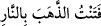

Mesnevî’de bu babda şöyle denmiştir:
Meşhûr Hârût ve Mârût kıssasını bilirsiniz.
Kötülük sebebiyle zehir bulaşmış oku yediler.
Onlar kendilerinin melek olmalarına güvendiler
Su sığırı arslana nasıl güvenebilir ki?
Gerçi o su sığırı boynuzuyla yüz türlü tedbîr ederse de
Arslan onun boynuzlarını paramparça yapar,
Sığırın boynuzları kirpi dikeni gibi her tarafını kaplasa da
Arslan öldürmek isteyince sığır onun elinden kurtulamaz.
Şeytanlar o iki meleğe öğretileni insanlara yaymak ve insanları onlarla uğraşmaya
çağırmakla –ki bunu sapıtmak ve yoldan çıkarmak için yapıyorlardı– küfre girdiler.
Oysa o iki melek, kendilerinden bu konu hakkında bilgi isteyenlere evvelâ nasihat edip
onunla amel etmenin küfür olduğunu ve kendilerinin de Allah Teâlâ’dan bir imtihan
sebebi olarak gönderildiklerini ve bu öğrettikleriyle amel edenin kâfir, öğrenmeyenin
veya korunmak gâyesiyle öğrenenin de mü’min olarak kalacağını bildirmeden hiç
kimseye bu işi öğretmiyorlardı.
Fitneden maksad, imtihândır, denemedir. Meselâ altının saf olup olmadığını anlamak
için ateşe vurulmasına; (  )“fetentü’z-zehebe bi’n nâr” denir. Fitne,
yaratma cihetinde Allah Teâlâ’dan işleme cihetinden de insandan sudûr eden
fiillerdendir. “Beliyye”, günah, cinâyet, azâb veya buna benzer fiiller de bu kabildendir.
Fitne bâzan da, irtidâd, günah işleme veya başkasını günah yapmaya zorlama,
durumlarında olduğu gibi, dînî konularda görülür.
Burada iki melek olmasına rağmen, fitne tekil olarak zikredildi. Bu, “fitne”
kelimesinin masdar olması hasebiyledir. Fitnenin iki meleğe hamledilmesi ise,
mübâlağa içindir. Yâni sanki o iki meleğin kendileri bizâtihî fitnedir. Âyette: “Biz
sâdece...” diye hasr ifâde eden bir üslûb kullanılması; onların yaptıkları şeyde,
insanları onu öğrenmekten uzaklaştırmak için başka bir durumlarının olmadığını
bildirmek içindir.
Onlar, onun şer’an bâtıl olmadığı ve onu yapmanın câiz olduğu, şeklinde bir hükme
vararak; sihirin helâl olduğunu söyleyerek küfre girmemelerini tenbîh ederlerdi. Hârût
ve Mârût bunu öğrettikleri şahsa tam yedi defa söylerlerdi. O kimse de öğrenmenin
dışında bir şey istemezse o zaman öğretirlerdi.
“Fakat bunlar iki melekten kişi ile hanımının arasını açacak şeyler
öğreniyorlardı.” Bu cümle, önceki cümle üzerine atıftır. O cümle her ne kadar olumsuz
idiyse de, olumlu cümle kuvvetindedir. Yâni “onlar ancak şunu, şunu dedikten sonra o
sihri öğrettiler” şeklindedir. “Yâni insanlar iki melekten sihir ve onu kullanma
sebebiyle karı koca arasını açacak şeyler öğreniyorlardı. Bu da sihir yaptıklarında
Allah’ın karı koca arasında kızgınlık, kavga-döğüş, geçimsizlik gibi şeyler meydana
getirmesi demekti. Bu; Allah Teâlâ’nın, imtihan için sıradan sebeblerin husûlünden